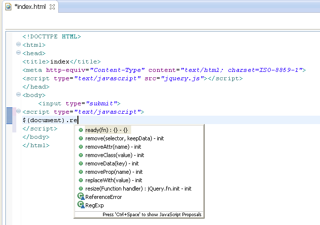

The betas for WebSphere Application Server V8.5.Next and WebSphere Application Server Developer Tools for Eclipse V9.0 and Rational Application Development for WebSphere V9.0 were released on Monday February 11th 2013. These releases extend the web profile and web services capability, and add many new features such as messaging and MongoDB support. This new and noteworthy covers some of the more notable changes.
Messaging
The Liberty profile includes preview support for the JMS 1.1-compliant messaging engine and message driven beans. The jmsMessaging-1.1 feature can be configured to enable a messaging client, and the jmsServer-1.0 feature enables a messaging server.
- You can use message driven beans in your application
- The messaging client and messaging server can be co-located in the same server or remote to one another
- When the optional jmsSecurity-1.0 feature is enabled, users trying to connect to the messaging queues and topics are authenticated and authorized.
- Secure SSL communication to remote clients can be optionally enabled
- Transactions are supported
An MXBean is available for monitoring and administration.
EJB Lite
The EJB support in the Liberty profile has been considerably extended. EJBs can now be packaged inside WARs as well as EARs. EJBs may be exposed as web services.
EJBs can now be secured using the javax.annotation.security annotations.
Stateful session beans are now supported, and have access to an Extended Persistence Context. All session beans types can be injected with a JPA EntityManager, EntityManagerFactory, or a datasource. You can make use of Bean Managed Transactions by having a UserTransaction injected into your bean.
If you prefer, you can use an ejb-jar.xml to define and configure your EJBs:

You can register EJB interceptors which will be called when the business or lifecycle methods of your beans are invoked. The No Interface View is now supported.
You can now easily configure EJB bindings for SCA 1.1 via a dialog.

Contexts and Dependency Injection
When the cdi-1.0 feature is enabled, EJBs inside WARs can look up @Named CDI beans. Java EE artifacts can be injected into CDI-managed beans.
As-you-type validations for CDI now supports un-annotated managed beans in the Java editor:

Classes can be injected with a resource called java:app/AppName to discover the owning application’s name.

Web Services
The wssecurity-1.0 feature provides support for securing web services at the message level. The Web Service X.509 Token Profile 1.1, WS-SecurityPolicy 1.3 and Web Services UsernameToken Profile 1.1 specifications are now supported.
You can now create JAX-WS projects for Liberty through the Web Services project creation wizards in WDT and RAD; the Liberty profile has been added as a new target to the top-down, bottom-up and WSDL client wizards.


You can add WebServices security policies to projects targeting Liberty profile via a menu option.

You can now configure WS-Security Username token profile for the Liberty runtime using a new wizard:

MongoDB Support
The mongo-2.0 feature enables application connections to MongoDB NoSQL databases.

Security
The appSecurity-2.0 feature is an update to the appSecurity-1.0 feature which no longer includes other Liberty profile features, such as servlet-3.0.
Password handling
Passwords in server.xml can now be AES-encrypted. You can use the securityUtility tool to encode your passwords using AES encryption. For example, you could use the following command to encrypt a password:
securityUtility encode –encoding=aes myPassword
You can then use the encrypted form anywhere in your server.xml configuration which takes a password:

You can now encrypt the password stored in the Liberty Profile’s server.xml file.

LDAP Registry
The ldapRegistry-3.0 feature provides support for an LDAP Version 3 user registry. If more than one LDAP server is configured in the server.xml, the results are federated from all of the repositories.

NIST
You can set up a Liberty profile to meet the SP800-131 requirement from the National Institute of Standards and Technology (NIST).
OAuth
The Liberty profile can act as an OAuth Service Provider (SP) to handle OAuth 2.0 protocol requests. Four typical OAuth 2.0 flows (as defined in the protocol) are supported.
Web profile
The webProfile-6.0 feature is a convenient way to request a common combination of Liberty features, such as jsf-2.0, jsp-2.2, servlet-3.0, ejblite-3.1, cdi-1.0, jpa-2.0, jdbc-4.0, transaction-1.1, jndi-1.0, and appSecurity-2.0.
Developer experience
Updated developers tools (WDT,RAD) are built on Eclipse 4.2.2 which includes a new look and feel. If you are installing WDT be sure to follow the install steps described in the WDT Beta Download.
A Liberty runtime target for development can now be installed via drag and drop. You can drag a Liberty Profile distribution image or installation folder and drop it to the Run-time Explorer view;

The runtime environment creation wizard is then launched and ready to create a runtime environment for you.

Cloud development experience improved in RAD with new ability to import archives from IWD as utility jars instead of projects which is the current default.

The workspace migration wizard has been simplified and streamlined.

You can now import SCA 1.1 archives from the file system via a simple wizard

Administration
This release includes a preview of new Liberty server administration features which allow you to organize Liberty servers into collectives for clustering and administration. You can run operations on multiple Liberty servers at a time.
- The collectiveController-1.0 feature provides MBeans that can be used to start or stop a collective member, update server configuration, and install applications.
- The collectiveMember-1.0 feature registers a server for management by the collective controller.
You can use client-side Jython scripts to connect to the management MBeans.You can transfer files to the server using an MBean.
You can add the defaultHostName variable to the server.xml file to set the default host name by which a Liberty server is identified.
The next generation user interface can be installed in the Liberty profile as a feature. It includes a new log viewer tool and a new monitoring tool.
New tools for the Admin UI
The Logging tool displays log files of servers in the Liberty profile installation. You can search for specific strings in a log file and explore highlighted search results.

The Monitoring tool displays trends for Java virtual machine (JVM) statistics of a Liberty profile server in a graphical format. You might use the tool to diagnose problems; for example, to determine whether CPU usage or memory issues might be causing a processing delay.

Extending the Liberty profile
You can extend the Liberty profile configuration to configure your own user features by provide XML metadata in an OSGI-INF/metatype directory in a bundle. This configuration can also be localized.
The development tools and the Liberty profile work together to ensure your user features don’t depend on Liberty internals. This protection is applied at both compile- and run-time. Your product extensions can use Liberty APIs and SPIs to interact with the server kernel and features.
You can now easily install and update your own Liberty Features without leaving the IDE.
You can install the feature using the “Install Feature…” option within the Liberty Feature’s context menu:

You can also install your Liberty Feature using drag and drop. Just drag the feature from the explorer view onto the Liberty runtime of your choice in the Runtime Explorer view

You can update the feature using the context menu or by dragging and dropping the feature again.

You can now use OSGi Declarative Services (also known as SCR) to manage the lifecycle and injection of OSGi services within your user features.
WABs (Web Application Bundles) can be packaged in features as well as EBAs, so features can provide web applications.
OSGi Applications
OSGi Applications deployed to Liberty servers from the developer tools can update incrementally. Changes to a workspace bundle will be handled more efficiently by republishing only the modified bundles, or fragments to the server instead of the entire application.
Maven support is now available for OSGi bundles. Maven support can be enabled in OSGi bundles or OSGi support can be enabled in Maven projects.

The OSGi manifest is generated by the Maven builder based on information in the Maven pom.xml file, resolving dependencies via the Maven classpath container (pom.xml first approach).

OSGi Maven bundles can be added to OSGi applications and deployed to WebSphere and Liberty servers.
Monitoring
Binary Logging
Liberty Profile Servers can be configured to output logs in an efficient binary format (HPEL). These logs can be viewed with the LogViewer command.
MBeans and MXBeans
The Liberty Profile includes a range of new MBeans and MXBeans to help with monitoring and administration.
These beans allow you to
- Query mean response time and request time statistics for individual servlets and web service
- Query thread pool sizes and activity levels
- Query JVM statistics such as heap usage, CPU time, and up time
- Monitor messaging topics, queues, and transactions
- Start and stop applications, or check application state
- Start and stop remote servers managed with the localConnector-1.0 feature
- Transfer files, list directory contents, and manipulate archives on the filesystem of a Liberty Profile server
Profiling
A faster profiling capability has been added to RAD. You can now do sample-based profiling by choosing to use the Health Center agent in the profiling configuration wizard

and selecting Sample-based profiling

The sample-based profiling data collected from Health Center will be displayed right into your workbench.

Code Coverage
You can now use the existing filtering capabilities for enabling Code Coverage via command line and Ant scripts.
In the code coverage launch history you can now delete a previously generated code coverage launch.

Web & Mobile Tools and Portal toolkit
You can now take advantage of jQuery Mobile API by using suggestions offered by a new JavaScript content assist
You can now create jQuery-based Portlet using the portlet project wizard. jQuery Portlet projects now support content assist for jQuery mobile API, drag and drop of jQuery mo-bile widgets from palette, and visualization of jQuery mobile widgets in RPE.

Functions no longer available
The following tools capabilities are no longer available in RAD and WDT: specialized tools for iWidget development, CEA Dojo widgets, and SDO/JDBC mediator; integrated JavaScript debugging with FireBug; Web Site Navigation tools.
You may continue to develop iWidgets using standard Web and XML editors. Applications using CEA Dojo widgets will continue to work and users may develop web applications that use CEA widgets using standard Web tools. Applications written using the SDO Mediator runtime provided by WebSphere will continue to function and can still be developed using source editors. Users may develop web applications using RAD and debug them using an external JavaScript debugger such as Firebug. Applications written using Site Navigation components will continue to function but cannot be updated.